スイングバイ その2: 木星行きの軌道
ΔVEGA・VEGA・VEEGA。木星まで届く軌道を3通り、実際に組み立てながら作り方を追いかけます。 その1の最後に出てきた「地球で放り出してもらうには V∞ 8.79 km/s 以上」という 壁を、どうやって越えるかの話です。
下敷き: 木星へ直行すると
まず比べるものを作ります。地球から木星へ、スイングバイを使わずにまっすぐ飛ぶ軌道です。 打上げの窓はポークチョップ図で探します。
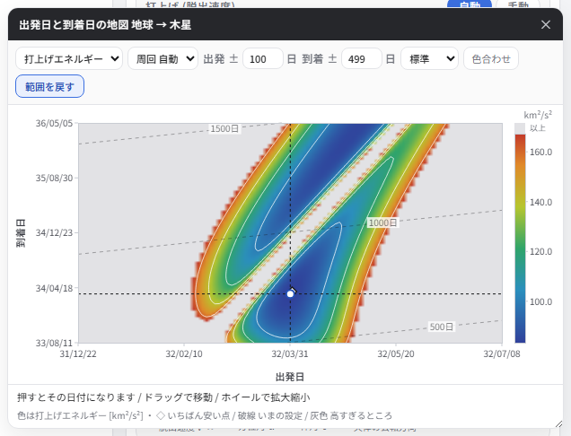
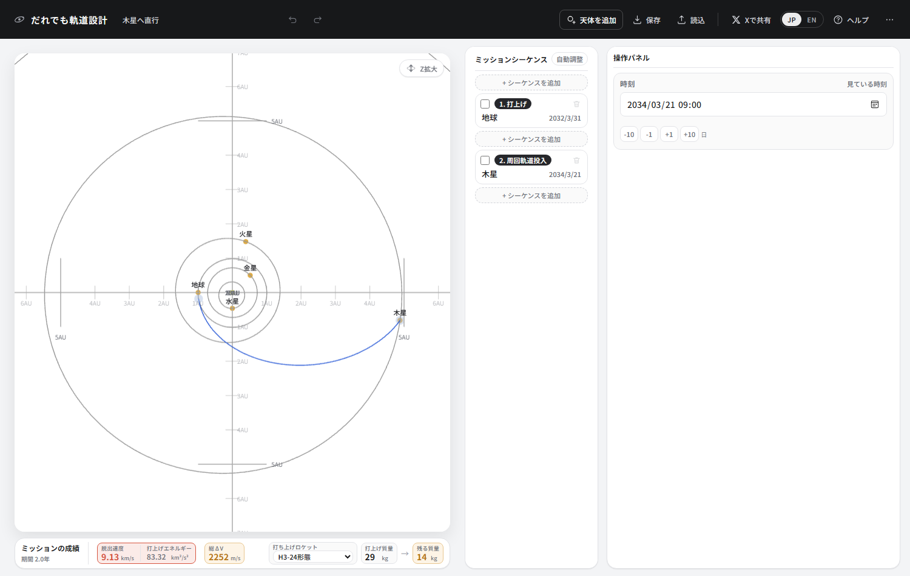
2年で着くのは速いのですが、14 kg では観測機器どころか探査機の骨組みも載りません。C3 が 83.32 もあるのが効いていて、ロケットの能力の曲線のいちばん右の端にいます。ここから先は、この C3 をどこまで下げられるかの話です。
ΔVEGA: 遠日点でちょっと噴いて、V∞ を育てる
その1で見たとおり、地球のスイングバイで木星へ放り出してもらうには、 地球に近づいてくるときの V∞ が 8.79 km/s 以上要ります。 素直に打ち上げて地球へ戻ってくるだけでは 5 km/s 前後にしかなりません。 その差を、深宇宙での小さな噴射で作るのが ΔVEGA (Delta-V Earth Gravity Assist) です。
ちょうど2年で戻ると、何も起きない
まず、うまくいかないほうから見ます。地球を出て、2年後にまた地球に戻ってくる軌道 (2年同期軌道) を考えます。周期がちょうど2年 = 730.5 日になる打上げは、 脱出速度 5.03 km/s (C3 25.3)。軌道の長半径は 1.587 AU、遠日点は 2.19 AU になります。
これで飛ばすと、730.5 日後には、地球がいる場所から 33,700 km のところに戻ってきます (地球の重力が効く範囲の内側です)。ところが、そこでの探査機の速さは 35.16 km/s、地球の公転は 30.13 km/s で、向きも同じ。つまり V∞ は 5.03 km/s ── 打ち上げたときのままです。きれいに戻ってきたのに、何ももらえていません。
離角ができると V∞ が増える
そこで、ほんの少しだけ強く打ち上げます。脱出速度 5.22 km/s (C3 27.21)。たった 0.19 km/s の違いですが、周期は 757 日 = 2年より 27 日長くなり、遠日点も 2.26 AU まで伸びます。 このままでは地球のいない場所に戻ってきてしまうので、 遠日点で 588 m/s だけ噴いて、地球に会うように時刻を合わせます。
この噴射は減速向きです (進む向きと 176.6°、速さが 15.59 → 15.00 km/s に落ちる)。遠日点でブレーキをかけると近日点が下がるので、軌道は近日点 0.988 AU・周期 757 日から、近日点 0.886 AU・周期 722 日に変わります。遠日点は 2.26 AU のままです。探査機はいったん地球の軌道の内側まで潜り、外へ戻ってくる途中で地球に追いつくことになります。
おかげで、戻ってくるときに地球の軌道を斜めに横切ることになります。 速度の向きに離角ができるわけです。
探査機の速さは 35.16 → 34.75 km/s と、むしろ少し落ちています。それでも離角が 14.1° つくだけで、V∞ は 5.03 → 9.36 km/s。木星へ放り出してもらうのに要る 8.79 km/s を超えました。噴いた 588 m/s に対して V∞ が 4.33 km/s 増えたので、7.4 倍のてこが効いたことになります。
なぜ遠日点で噴くのか
同じ「戻りの V∞」を得るのに、どこで噴くと安く済むかを測ったのが次のグラフです。 打上げは上と同じで、噴射する場所だけを変えてあります。
遠日点は探査機がいちばんゆっくり進んでいる場所です (2.25 AU で 15.6 km/s、1.52 AU では 25.0 km/s)。 ゆっくり動いているものほど、同じ噴射で向きが大きく変わります。 速度の向きが変われば軌道の形が変わり、戻ってくる時刻と場所が大きく動く。 これが「遠日点で噴く」の中身です。
作り方
木星に着く日から逆算するのではなく、地球スイングバイの日から組み立てるのがこつです。 その日はポークチョップ図で決まります。
- 打ち上げたい年の2年後で、地球 → 木星のポークチョップ図を見て安い日を選ぶ (上でやった 2032/3/31)。
- その2つのシーケンス (打上げ・木星) を置いたら、一覧のいちばん上の「+ シーケンスを追加」を押す。 先頭に新しい打上げが入り、もとの打上げが空のシーケンスになるので、これを地球のスイングバイにする。
- 新しい打上げの日付を2年前に戻す。
- 打上げを手動モードにする。ちょうど2年後の地球は打ち上げた場所に戻ってきているので、 出発と到着が同じ点になってランベール問題が解けません。自動モードのままでは組めません。
- 付いてきた噴射のシーケンスを、1年ちょっと後 (遠日点のあたり) に置く。
- 打上げの脱出速度に 5.2 km/s、方位角と仰角に 0 を入れる。
- 自動調整を押す。
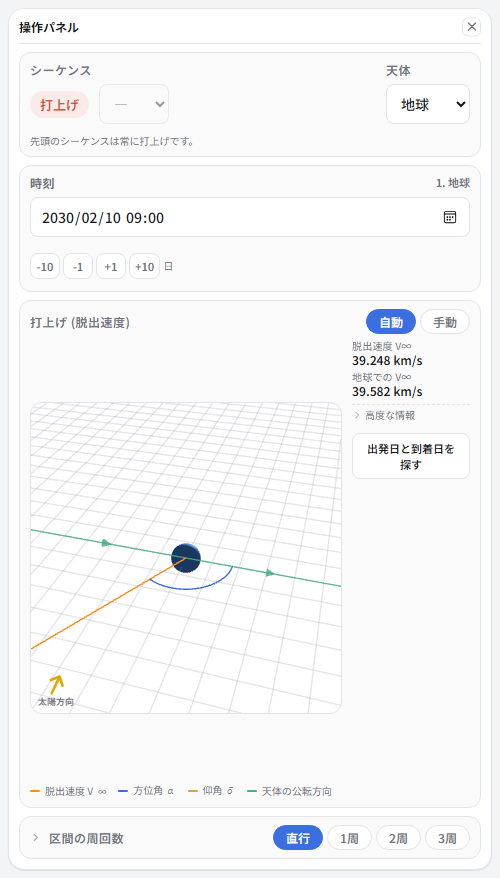
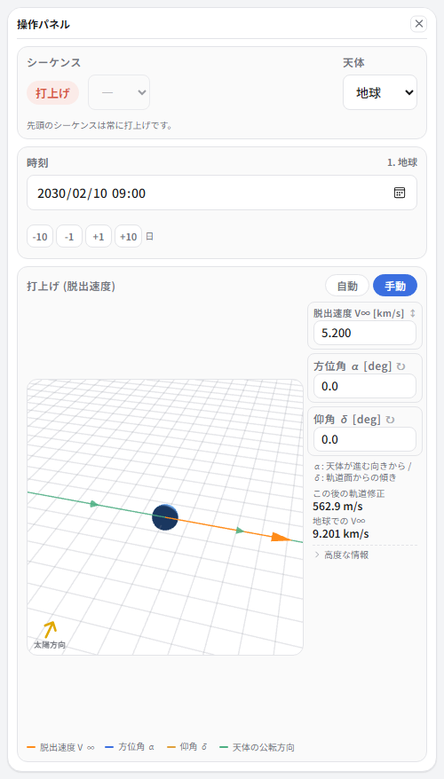
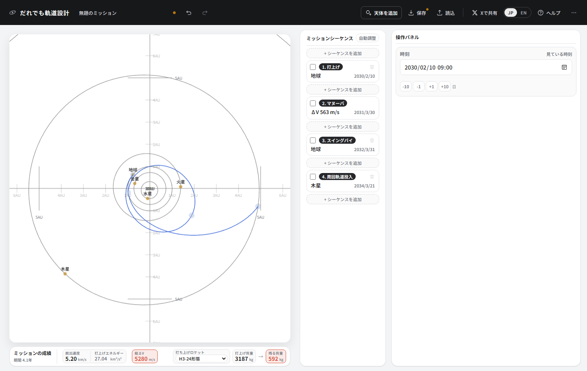
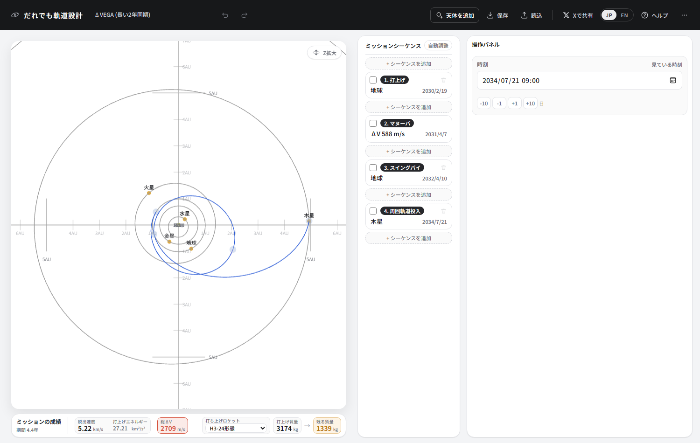
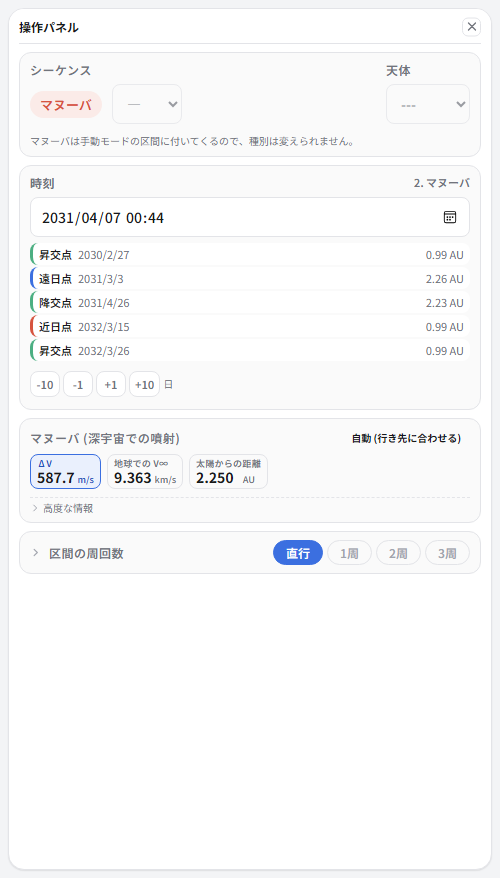
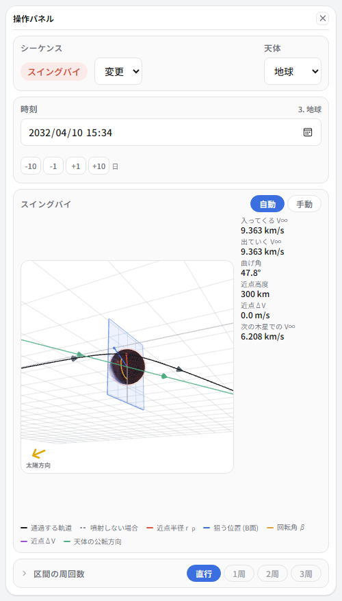
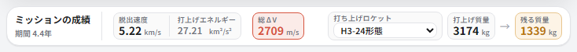
地球のところで噴いた量は 0 です。588 m/s の噴射ひとつで、14 kg しか運べなかった直行が 1339 kg になりました。木星に着くまでは 4.4年 かかりますが、積める量が 95 倍以上違います。
2年同期には、短いのと長いのがある
上の設計は、打上げから地球に戻るまでが 781 日でした。2年より2か月ほど長い。 これは偶然ではありません。地球に戻るまでの日数を変えながら、 「V∞ 9.13 km/s を、600 m/s 以下の噴射で出せる最小の打上げ C3」を探すと、こうなります。
ちょうど2年で戻ると地球は打ち上げた場所に戻ってきていて、探査機も同じ向きで帰ってくる。 離角が作れないので V∞ が増えません。 使えるのは、そこから前後にずれた短いほう (678 日) と 長いほう (781 日) の2つです。
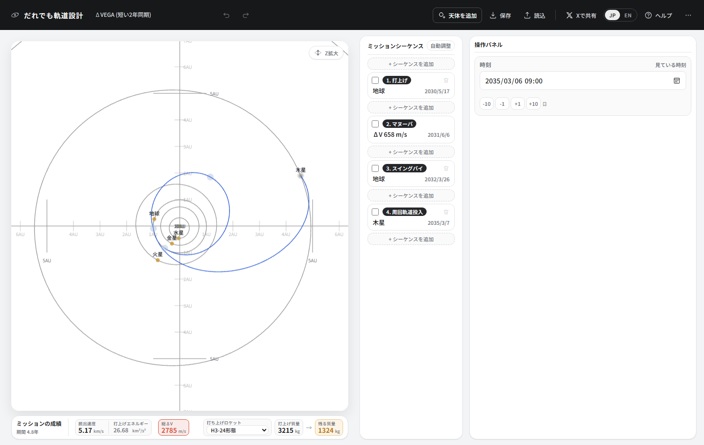
| 打上げ | 噴射 | 地球スイングバイ | 木星 | 地球に戻るまで | C3 | 残る質量 | かかる時間 | |
|---|---|---|---|---|---|---|---|---|
| 短いほう | 2030/5/17 | 658 m/s | 2032/3/25 | 2035/3/6 | 678 日 | 26.68 | 1324 kg | 4.8年 |
| 長いほう | 2030/2/19 | 588 m/s | 2032/4/10 | 2034/7/21 | 781 日 | 27.21 | 1339 kg | 4.4年 |
成績はほとんど同じです。違うのは形と、木星に着くまでの時間。 短いほうは地球へ早く戻るぶん、木星へ向かう区間が長くなります。
いいところ: 窓が毎年来る
ΔVEGA が使うのは地球と木星だけです。だから打上げの機会は、 地球 → 木星の窓 (13か月おき) と同じ間隔で回ってきます。 窓のたびに同じ手順で組めるかを試したのが次の表です。
| 地球 → 木星の窓 | 打上げ | 地球に戻るまで | 打上げ C3 | 噴射 | 戻ってきたときの V∞ |
|---|---|---|---|---|---|
| 2030/1/21 | 2028/3/7 | 685 日 | 26.0 | 573 m/s | 9.06 km/s |
| 2031/2/25 | 2029/4/21 | 675 日 | 27.0 | 593 m/s | 9.25 km/s |
| 2032/3/31 | 2030/5/26 | 675 日 | 27.0 | 656 m/s | 9.61 km/s |
| 2033/5/30 | 2031/7/25 | 675 日 | 27.0 | 694 m/s | 9.50 km/s |
| 2034/7/5 | 2032/8/24 | 680 日 | 27.0 | 658 m/s | 9.57 km/s |
| 2035/8/10 | 2033/6/11 | 790 日 | 29.2 | 634 m/s | 9.50 km/s |
どの窓でも C3 30 以下で組めています。あとで出てくる VEGA・VEEGA は金星の位置にも縛られるので、 ここが ΔVEGA のいちばんの取り柄です。
VEGA: 金星で V∞ を上げる
噴射で V∞ を作るかわりに、途中で別の天体に寄るのが VEGA (Venus-Earth Gravity Assist) です。地球 → 金星 → 地球と回ってから、地球で木星へ放り出してもらいます。
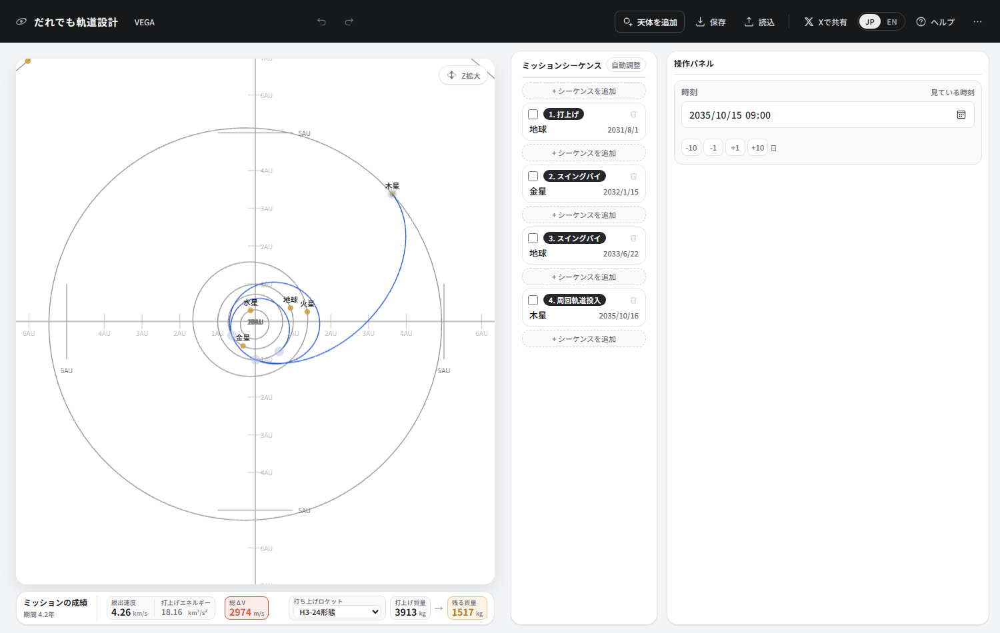
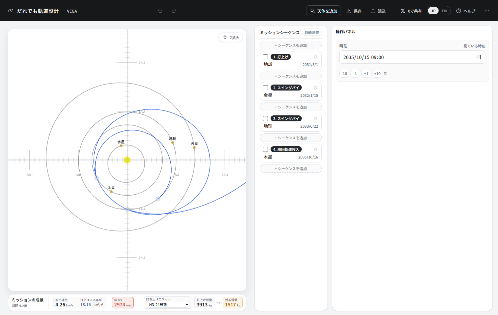
打上げの脱出速度は 4.26 km/s しかありません。金星に着くときの V∞ が 9.27 km/s、そこで 35.7° 曲げてもらうと、地球に戻ってきたときの V∞ は 12.93 km/s。ΔVEGA が噴射で 9.36 km/s まで育てたのと同じことを、燃料なしでやったことになります。
| 区間 | 日数 | 周回数 | この区間の遠日点 | 着いたときの V∞ | そこでの曲げ角 |
|---|---|---|---|---|---|
| 打上げ → 金星 | 167 日 | 直行 | 1.02 AU | 9.27 km/s | 35.7° |
| 金星 → 地球 | 524 日 | 1 周 | 1.72 AU | 12.93 km/s | 31.1° |
| 地球 → 木星 | 845 日 | 直行 | 4.99 AU | 6.28 km/s | - |
金星は公転が速く (35.1 km/s)、その1で見たとおりスイングバイの相手として優秀です。 遠日点も、打上げ直後の 1.02 AU から 1.72 AU、そして地球で放り出されたあとは 4.99 AU まで伸びます。
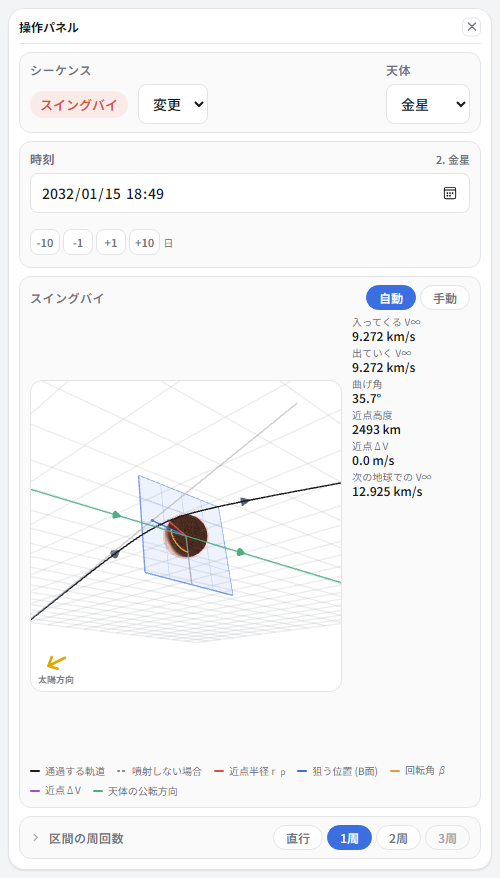
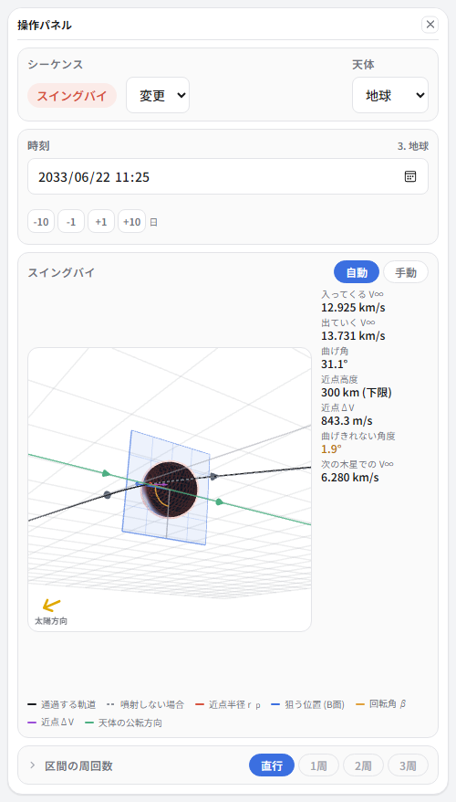
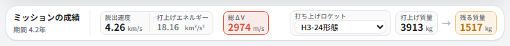
VEEGA: 地球を2回使って、曲げを分ける
曲げきれないなら、2回に分ければいい。 地球で1回曲げてから、もう一度地球に戻ってくる区間を挟み、2回目の地球で木星へ放り出してもらう。 これが VEEGA (Venus-Earth-Earth Gravity Assist) です。 木星へ向かったガリレオ探査機が使った並びでもあります。
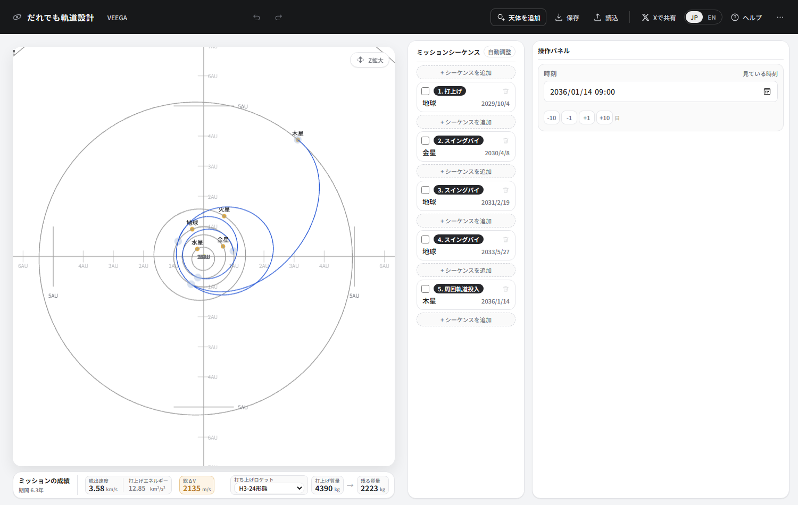
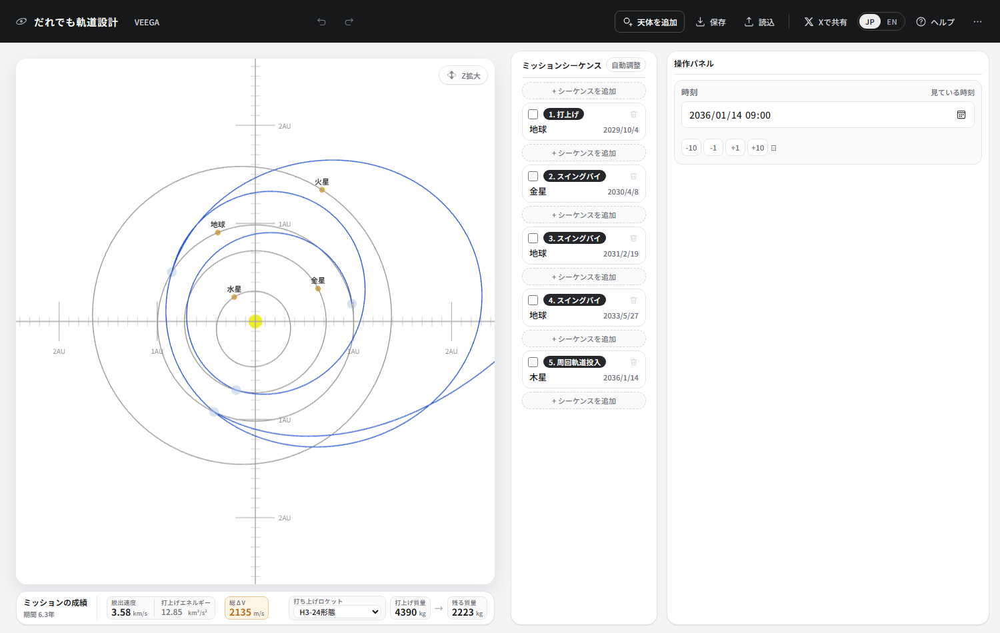
| 区間 | 日数 | 周回数 | この区間の遠日点 | 着いたときの V∞ | そこでの曲げ角 |
|---|---|---|---|---|---|
| 打上げ → 金星 | 187 日 | 直行 | 1.01 AU | 5.45 km/s | 49.3° |
| 金星 → 地球 | 316 日 | 直行 | 1.36 AU | 9.60 km/s | 31.0° |
| 地球 → 地球 | 828 日 | 1 周 | 2.34 AU | 9.64 km/s | 42.8° |
| 地球 → 木星 | 963 日 | 直行 | 5.00 AU | 5.96 km/s | - |
1回目の地球で 31.0°、2回目で 42.8°。合わせて 73.8° 曲げています。VEGA が1回で曲げようとして 1.9° 足りなかったことを思えば、分けたぶんだけ余裕ができました。V∞ は 9.60 km/s と VEGA より小さく、そのぶん1回あたりの曲げ角を大きく取れます。遠日点は 1.01 → 1.36 → 2.34 → 5.00 AU と、階段のように伸びていきます。
間に挟んだ地球 → 地球の区間は 828 日。その軌道は長半径 1.62 AU・周期 754 日で、ΔVEGA で使った2年同期軌道 (周期 757 日) とほとんど同じ形です。違うのは、噴射で日付のつじつまを合わせるかわりに、区間の周回数を1にして、太陽のまわりを1周多く回ってから地球に会いに行くこと。そのぶん地球は 2.27 周し、828 日かけて出会います。噴射は要りません。
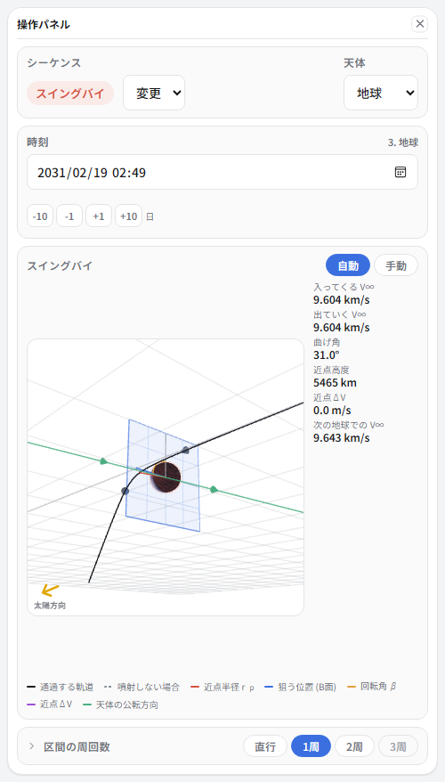
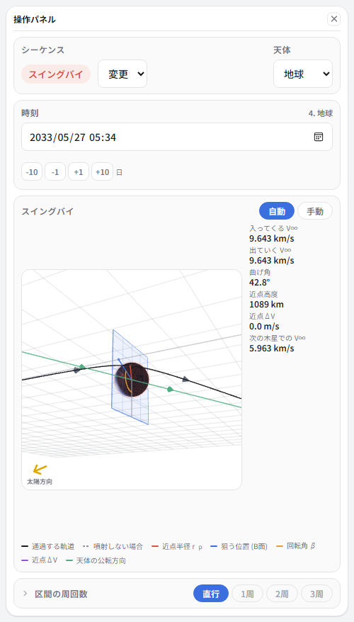
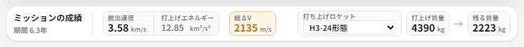
作り方
正直に書くと、VEGA と VEEGA には ΔVEGA のような「必ずこうすれば出てくる」手順を見つけられませんでした。 日付が5つあり、そのすべてが噛み合わないと成立しないためです。 この資料の軌道も、条件を決めて総当たりで探したものです。 それでも、探すときの当たりの付け方は分かってきたので書いておきます。
- 金星の窓から始める。地球 → 金星は約1年7か月おきに窓が来ます。 まず打上げと金星スイングバイの2つを置いて、ポークチョップ図で安い日を選びます。
- 金星 → 地球は 300 日前後、または「1周回」で 520 日前後。 区間の周回数を1にすると、探査機が太陽を1周多く回ってから地球に戻ります。 この資料の VEGA では、これで戻りの V∞ が 12.9 km/s まで伸びました。
- 戻ってきたときの V∞ を見る。 シーケンスを選ぶと「次の○○での V∞」が出ます。9〜10 km/s なら、そのまま地球で木星へ放り出せます。 13 km/s まで伸びていたら曲げきれないので、地球 → 地球の区間を挟んで VEEGA にします。
- 地球 → 地球の区間は 800〜850 日 + 周回数1。 ちょうど1年・ちょうど2年は解けません (出発と到着が同じ点になるため)。
- 最後に木星を足して、自動調整。近点ΔV が残っていたら日付を動かして試します。
4つを並べる
| 軌道 | 打上げ C3 | 打ち上げられる質量 | 途中の噴射 | 木星で軌道に入る噴射 | 残る質量 | かかる時間 |
|---|---|---|---|---|---|---|
| 木星へ直行 | 83.32 | 29 kg | - | 2252 m/s | 14 kg | 2.0年 |
| ΔVEGA (長い2年同期) | 27.21 | 3174 kg | 588 m/s 遠日点での噴射 | 2121 m/s | 1339 kg | 4.4年 |
| VEGA | 18.16 | 3913 kg | 843 m/s 地球での近点ΔV | 2130 m/s | 1517 kg | 4.2年 |
| VEEGA | 12.85 | 4390 kg | 44 m/s 金星での近点ΔV | 2091 m/s | 2223 kg | 6.3年 |
下へ行くほど打上げが軽くなり、載せられる荷物が増え、そのかわり時間がかかります。直行の 14 kg と VEEGA の 2223 kg では 158 倍以上の差です。スイングバイを1回増やすたびに C3 が下がっているのが分かります。
まとめ
- 地球で木星へ放り出してもらうには V∞ 8.79 km/s 以上。素直に飛んだだけでは足りない。
- ΔVEGA: 2年で地球に戻る軌道を組み、遠日点で 600 m/s ほど噴いて離角を作る。 速さはほとんど変わらないのに V∞ が倍近くになる。窓は13か月おきに来る。
- 2年同期はちょうど2年では使えない。短いほう (678 日) と長いほう (781 日) の2つ。
- VEGA: 金星に寄ると V∞ が一気に上がる。上がりすぎると地球で曲げきれない。
- VEEGA: 地球を2回使って曲げを分ける。いちばん軽く打ち上げられるが、いちばん時間がかかる。
ホーマン遷移と、3次元の壁 — ポークチョップ図の島が2つある理由。
ロケットの打上げ能力 — C3 と打ち上げられる質量の関係。
チュートリアル ④ — Juno風の ΔVEGA を、手を動かして作る。